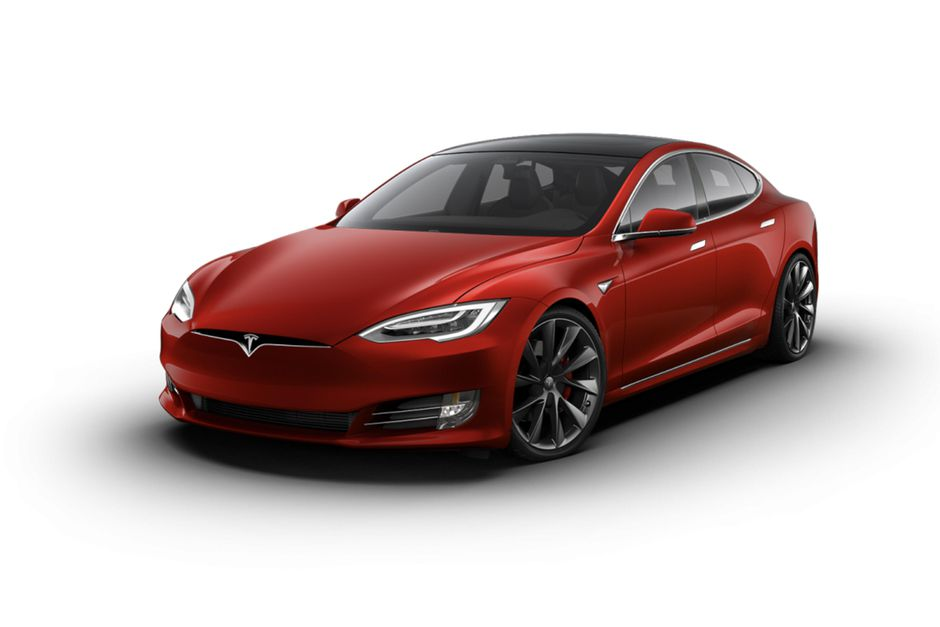

Luis Miguel Blanco Carrillo

Modelos:
- Tesla Model 3. Sedan.
- Tesla Model S. Model S.
- Tesla Model X. Model X.
- Tesla Model Y. Model Y.
Tesla Motors es una compañía norteamericana creada en 2003 con sede en California. Bajo el mando de Elon Musk, fabrica y comercializa vehículos, así como componentes y baterías para otros fabricantes como el grupo Daimler o Toyota. Tomando el nombre del físico e ingeniero Nikola Tesla, desarrolla motores de inducción creando sistemas compactos y con un número inferior de piezas móviles que un motor térmico convencional. Así mismo, la compañía cuenta con patentes propias para su fabricación, las cuales han sido liberadas al público desde 2014.
Tesla es un fabricante de automóviles estadounidense que se caracteriza porque todos sus modelos son eléctricos. Fundada en julio de 2003 por el hombre de negocios, científico y visionario Elon Musk, no fue la primera marca en fabricar un automóvil 100% eléctrico, pero sí la pionera en su producción en serie.
El Tesla Model S ha sido el primero de su especie. Una berlina 100% eléctrica que ha demostrado al mundo que la movilidad sostenible es realmente posible. Sus rivales no son demasiados porque en Europa muchos fabricantes prefieren optar por SUV eléctricos ante la elevada demanda de estos. Pero si tenemos que fijarnos en posibles rivales, cabe mencionar por encima de todos al Porsche Taycan. Es más pequeño que el americano, pero sin lugar a dudas su precio y sus prestaciones son similares. En un futuro se sumarán más modelos a esa lista.